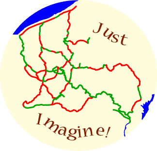

®
Just Imagine being able to tour by bicycle to all parts of the region
Just Imagine having a variety of route planning choices for your bicycle tour
Just Imagine riding different routes to different destinations because the variety is available
Just Imagine the changes that could grow out of this system
In the upper left corner is Lake Erie and in the lower right corner is the Chesapeake Bay.
The green lines are existing trails, the pink lines are proposed, suggested, imagined trails
The above image is a trade mark of Shaw-Weil Associates. A free, non-exclusive license to use the trademark for the promotion of trails is available.